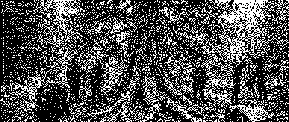

1. was
Die Permasoftware Assembly ist eine Begegnungsresidenz und eine offene Plattform. Software mit kleinem Fussabdruck ist einfach, langlebig, energiesparsam und reparierbar.
Von Oktober bis Dezember 2026 hält die Assembly drei Arbeitstreffen ab. In jeder Schweizer Sprachregion gibt es ein Treffen: Deutschschweiz, Romandie und Tessin.
An jedem Treffen baut die Gruppe gemeinsam Werkzeuge. Die Gruppe nutzt KLAP, um gemeinsame Positionen zu finden. Nach den Treffen veröffentlichen wir eine Zusammenfassung und den Code.

2. prinzipien
- Einfach. Wenige Teile und wenige Abhängigkeiten verwenden.
- Langlebig. Werkzeuge bauen, die viele Jahre funktionieren.
- Energiesparsam. Alte Hardware und kleine Server verwenden.
- Reparierbar. Den Code veröffentlichen. Kurze Anleitungen schreiben.
- Lokal zuerst. Die Daten bleiben bei der Gruppe. Kein Tracking von Menschen.
- Kritische KI. KI nur nutzen, wenn sie der Gruppe hilft. Manchmal ist keine KI die bessere Wahl.
3. projekte
Diese Projekte gibt es schon. Sie sind die ersten Teile der Plattform.
Radiolibre
Ein Community-Radio auf einem kleinen Server. Icecast sendet das Audio und ein statischer Web-Player empfängt es. Hörer:innen brauchen kein Konto.
iScream
Vom Handy-Browser aus auf Sendung gehen. Keine App und kein Konto nötig. Der Server speichert kein Audio und keine Zugriffsprotokolle. Eine Brücke verbindet den IRC-Chat und die Telegram-Gruppe.
LiquidIce
Ein Telegram-Bot für eine Gruppe. Mitglieder senden Fotos, Texte, Audio und Video. Der Bot macht daraus ein Web-Archiv und einen Radio-Stream. Er speichert eine Kopie auf archive.org.
KLAP :: Klimat Action Protocol
Ein freies Werkzeug für Gruppenentscheidungen. Eine Person schreibt eine These. Andere fügen Gründe hinzu: weil, aber, jedoch. Das Werkzeug zeigt, wo die Gruppe übereinstimmt.
AudioMoth scripts
Skripte für Feldaufnahmen von AudioMoth-Rekordern. Sie finden Klangereignisse, berechnen akustische Indizes und erstellen einen saisonalen Kalender. Die ganze Verarbeitung ist lokal, ohne Cloud.
SoundWalk :: DerivaSonora
Eine Handy-App für Klangspaziergänge. Klänge mit Ort aufnehmen, Notizen hinzufügen und auf einer Karte wieder anhören. Sie funktioniert offline: kein Konto, kein Server, kein Tracking.
4. karte
Die Projekte verbinden sich in drei Zweigen: hören, entscheiden und senden.
5. nächster schritt
Der nächste Schritt ist ein Netz, das kein Internet und keine grossen Firmen braucht.
- Reticulum. Ein Netzwerk-Stack für Mesh-Netze. Er funktioniert über LoRa-Funk, Packet Radio, WLAN und das Internet. Gruppen senden Nachrichten ohne zentralen Server.
- Telegram. Viele Gruppen nutzen heute Telegram. Bots bleiben die einfache Eingangstür. Später verbindet eine Brücke Telegram und Reticulum.
- Lokale KI. Kleine Modelle laufen auf der eigenen Hardware der Gruppe. Beispiele: Transkription für Radioarchive, Zusammenfassungen von KLAP-Debatten. Keine Daten gehen in eine Cloud.

6. menschen
- Alejandro Duque Jaramillo :: Koordination. Schweizerisch-kolumbianischer Künstler. Linux und Kulturmanagement. Entwickler von KLAP und Radiolibre.
- Gonzague Rebetez :: KI-Berater. New-Media-Künstler in Biel/Bienne. Mitgründer des Kunst- und Wissenschaftskollektivs WÆXE.
- Creative Climate Changemakers Switzerland 2026 :: Seed Grant.
Mitmachen. Eröffne ein Issue auf GitHub. Erzähl uns von deinem Projekt und deinen Software-Bedürfnissen.